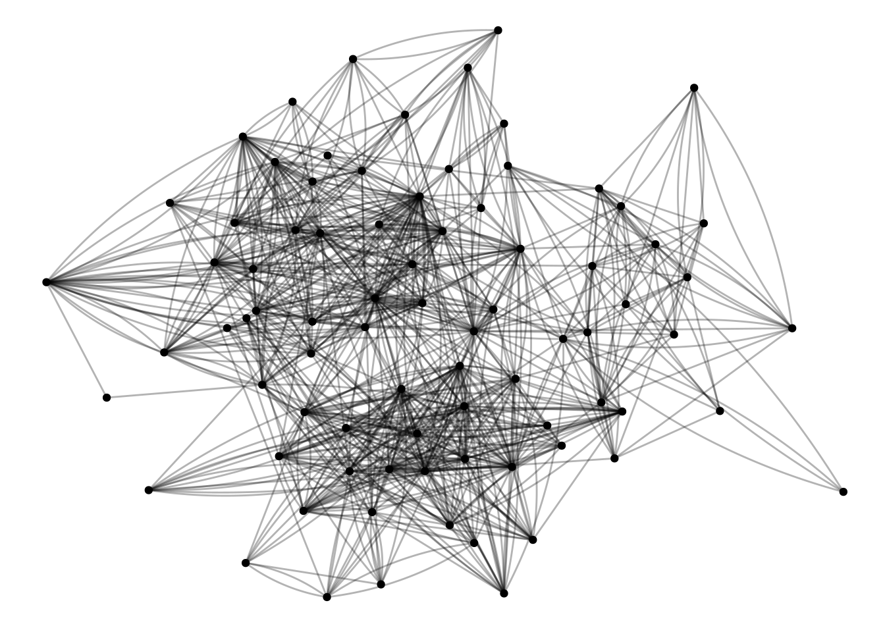
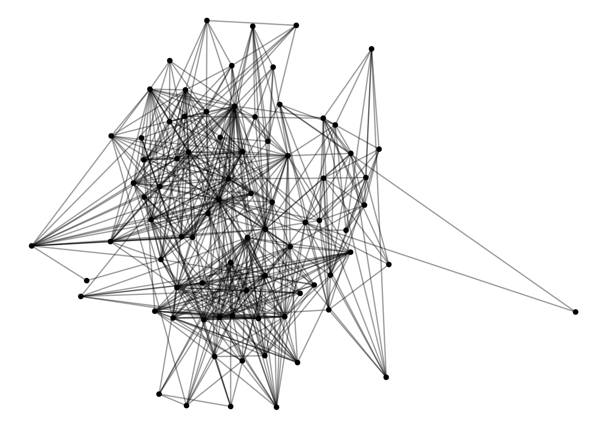
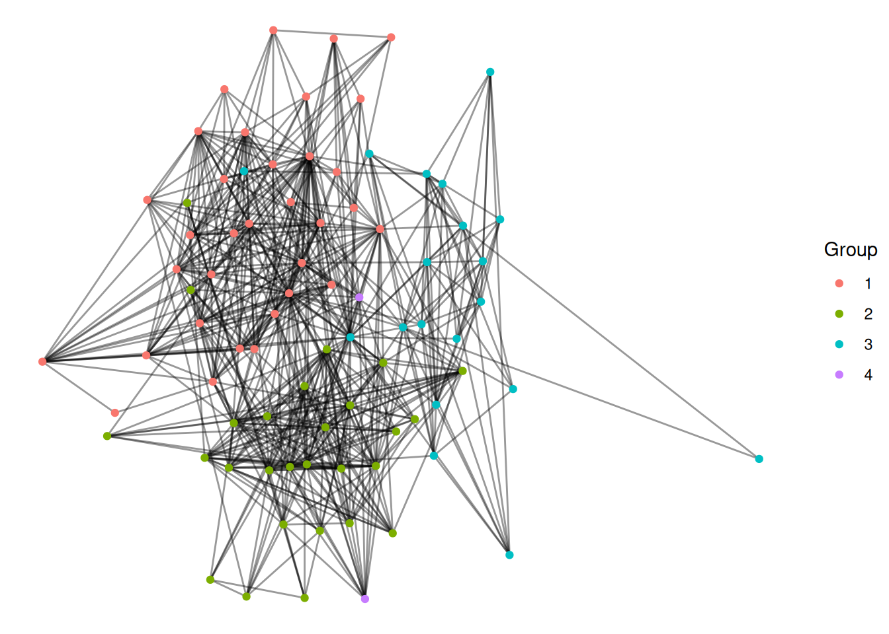
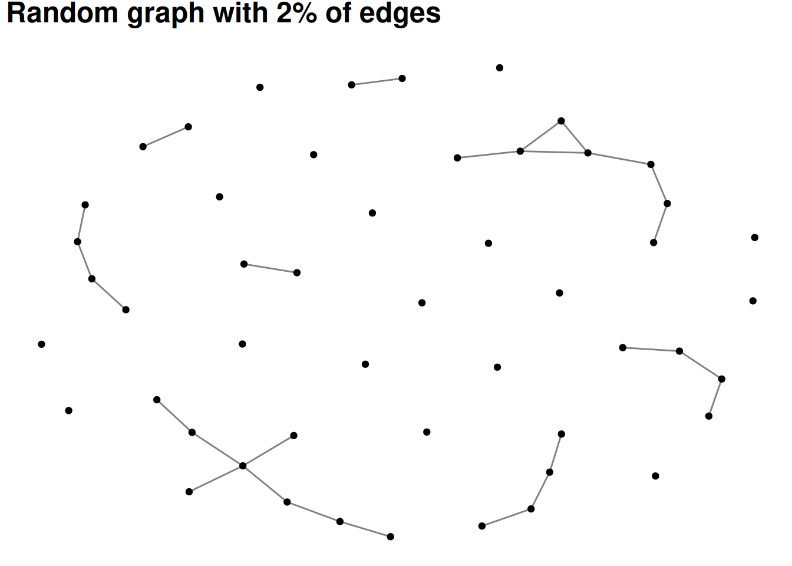
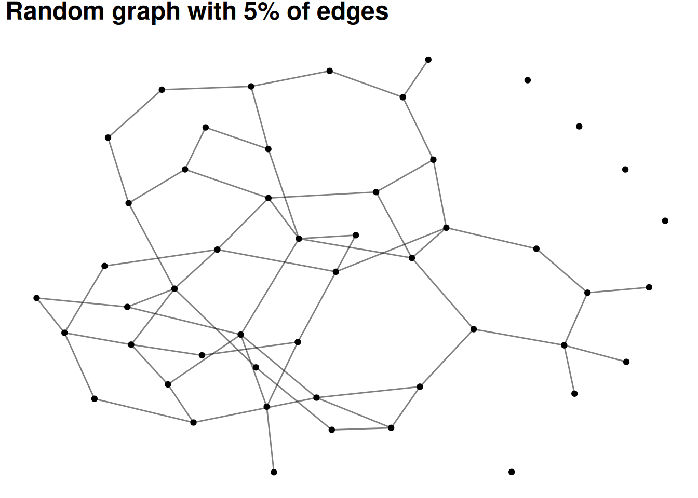
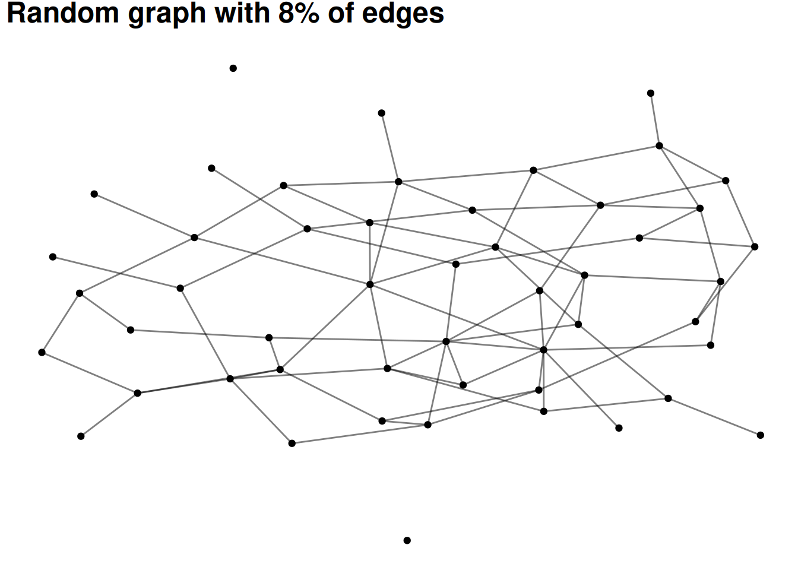
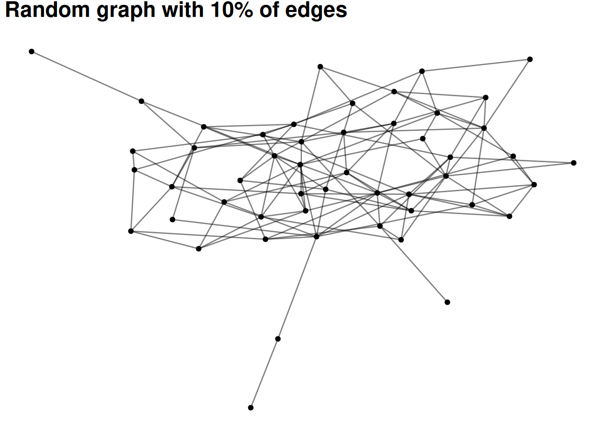
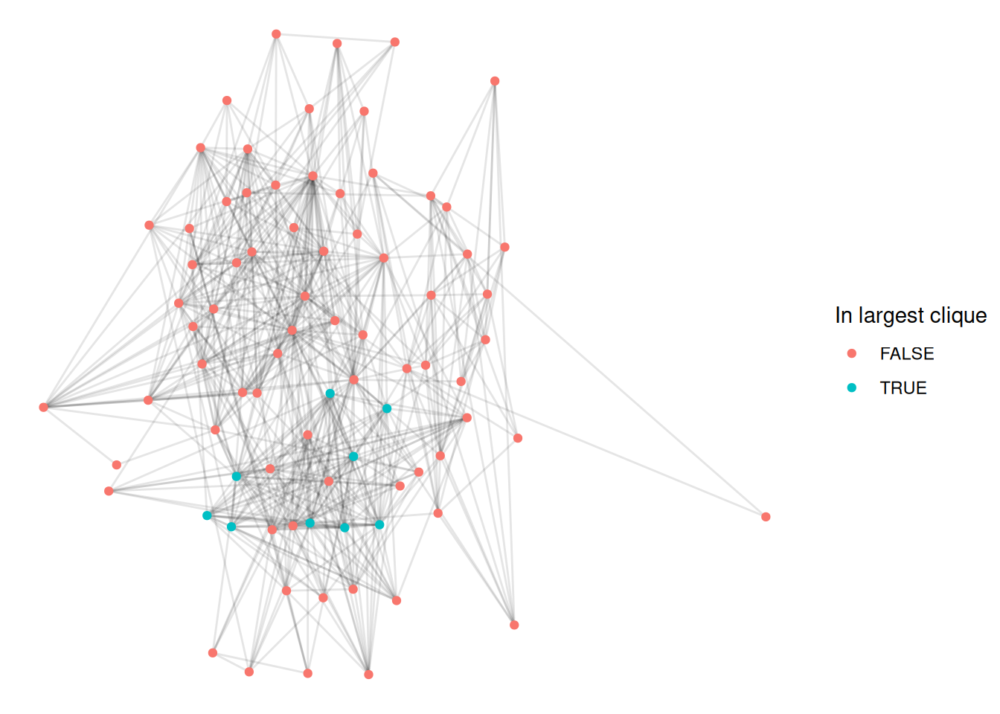
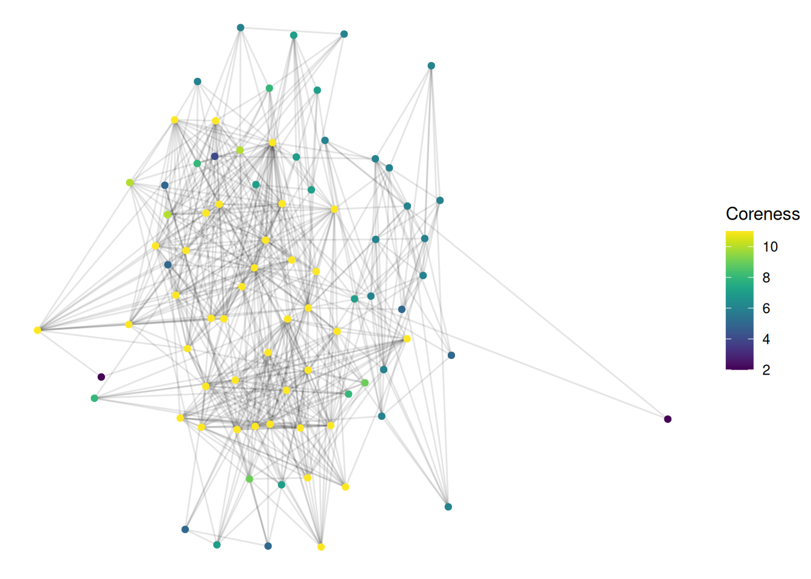
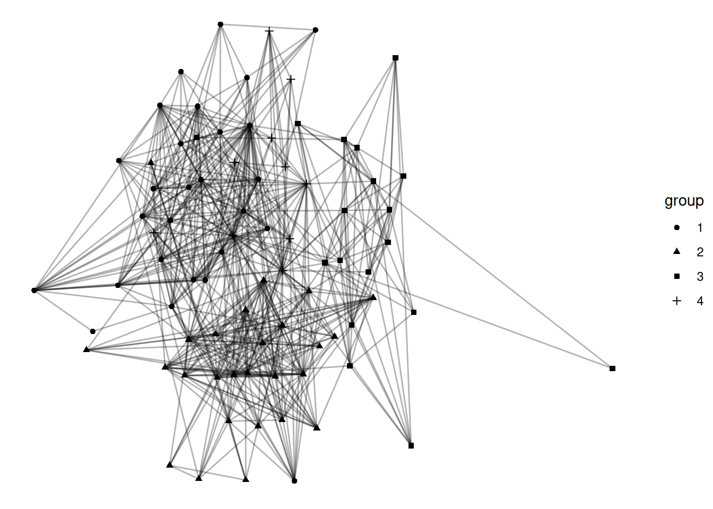

In this lesson, we will focus on understanding different approaches to identifying groups in networks. Human networks are “groupy”—whether through triadic closure or foci of activity, and so large enough networks will typically be composed of different groups. If you think about your own friendship network, it’s likely that you could group many of them (e.g., high school friends, soccer friends, and Comm friends). Network structure can be used to identify different groups.
Data
For much of this lesson, we will use the UKfaculty friendship data which is part of the igraphdata package.
Let’s load it as UK and take a quick look at it
#install.packages('igraphdata') # Run this if it isn't installed yetlibrary(igraphdata)data("UKfaculty")UK <-as_tbl_graph(UKfaculty)UK |>activate(edges) |>ggraph() +geom_edge_fan(alpha=.3) +geom_node_point()
This graph was created by an old(er) igraph version.
Call upgrade_graph() on it to use with the current igraph version
For now we convert it on the fly...
Using "stress" as default layout

Whenever loading a new dataset, it’s worth looking at it. Because we loaded this as a tidygraph tbl_graph, we can just type the name of the graph, and it will show the node and edge attributes.
UK
# A tbl_graph: 81 nodes and 817 edges
#
# A directed simple graph with 1 component
#
# Node Data: 81 × 1 (active)
Group
<dbl>
1 3
2 1
3 3
4 3
5 2
6 2
7 2
8 1
9 3
10 2
# ℹ 71 more rows
#
# Edge Data: 817 × 3
from to weight
<int> <int> <dbl>
1 57 52 4
2 76 42 14
3 12 69 4
# ℹ 814 more rows
So, for nodes we know the department that each person belongs to (the “Group” node attribute) and a weight representing the strength of the relationship. Some of the algorithms we are going to be working with assume undirected networks, so we’re going to filter this network to only mutual edges, and treat it as undirected. That’s what this first bit of code does.
UK <- UK |>as.undirected() |>as_tbl_graph()
Now, it’s easier to see what’s going on, and there’s only one edge between each dyad.
UK |>ggraph() +geom_edge_fan(alpha=.4) +geom_node_point()
Using "stress" as default layout

Finally, we can color the nodes by their group.
Exercise
Make a network figure that colors the nodes by the Group node attribute (Hint: they will look a lot better if you use as_factor).
UK |>activate(nodes) |>mutate(Group =as_factor(Group)) |>ggraph() +geom_edge_fan(alpha=.4) +geom_node_point(aes(color=Group))
Using "stress" as default layout

We can use the known group to compare different approaches for identifying groups in networks.
Approaches to identifying groups in networks
Components
The simplest version of a group in a social network is all of the people who are connected to each other. This is called a component. Most real-world social or communication networks include almost everyone in a single, “giant component”. This seems strange at first, but an example can help to show why it works this way. Let’s say you had a network of 50 people with two large components of 25 people each. If any one of the 25 people in one component adds an edge to any one of the 25 people in the other component, then the components merge. In other words, there are so many possible edges that would combine the components that one of them is bound to occur unless there is something separating the groups.
The following visualizations show random graphs as they go from 2% density to 10% density. Even at only 8% or 10% density almost any random graph will be a single, large component (with maybe a few isolates).
This attribute of networks means that components are rarely very interesting as a way of grouping nodes.
# Don't worry about understanding this code - it's basically just plotting # different densities of random graphs#set.seed(12)for(p inc(.02, .05, .08, .10)){ G =random.graph.game(50, p) |>as_tbl_graph() plot <- G |>ggraph(layout='fr') +geom_edge_fan(alpha = .5) +geom_node_point() +labs(title=paste0("Random graph with ", p*100, "% of edges"))print(plot)}




Cliques
The next simplest idea is a clique—this identifies groups of nodes where everyone is connected to everyone else in the group.
Let’s find the largest cliques in this network, using the largest_cliques function
# Find the largest clique(s)UK |>largest_cliques()
This network has a bunch of cliques of size 9—that means that each person in the clique is connected to each of the other 8 people.
Let’s visualize this by coloring the first of these cliques.
# First, get the list of nodes in the first cliqueclique_nodes <-largest_cliques(UK)[[1]]UK |>activate(nodes) |>mutate(idx =1:nrow(.N())) |># Create an index for the nodesmutate(in_clique = idx %in% clique_nodes) |># If the index is one of the clique nodesggraph(layout ='stress') +geom_edge_fan(alpha=.1) +geom_node_point(aes(color=in_clique)) +# Color by whether the node is in the cliquescale_color_discrete(name='In largest clique')

This is a fairly intuitive way of identifying groups but we can see the limitations pretty quickly. For example, in the figure above, we can see quite a few nodes which are clearly part of the group but which aren’t included in the clique. This is because maybe they are connected to all but one of the others in that group. This is a problem with cliques—they are very strict about who is in the group and who isn’t.
A number of tweaks to this approach exist, such as n-cliques (where everyone in the group has to be connected within a distance of n) and k-plexes (where everyone in the group has to be connected to all but k other members). These do help make groups more natural. Unfortunately, neither of these have simple implementations in igraph so I won’t visualize them.
Community detection
There are a number of more complicated algorithms for finding communities in networks, often called “community detection” or “clustering” algorithms. The very bottom of this page shows those which have been implemented in ggraph.
Many of them are based on one of two ideas—the first is modularity. These approaches attempt to find partitions of a network which maximize the number of edges within groups and minimize the number of edges between them.
The second approach is based on “random walks”. The idea is that if you start at a random place in a network and move along a random edge, and keep doing this over and over, then walks should generally stay within groups and rarely go between them.
I’ll show you how to visualize a couple of these in ggraph
First, a modularity approach, using the “fast greedy” algorithm
This is also pretty good, and looks quite similar. For many networks, different modern community detection approaches give fairly similar results.
K-cores
Finally, it’s worth mentioning a related concept, called “coreness”. This isn’t quite the same as identifying the group a node is in; the idea is to identify “central” and “peripheral” parts of a network. Each node gets a “coreness” number, which is the largest k for which it exists in a subgraph where all nodes are connected with at least k edges. This sounds super confusing, but it makes a bit more sense when plotted. Here is some sample code for visualizing coreness.
UK |>activate(nodes) |>mutate(coreness =node_coreness()) |>ggraph(layout='stress') +geom_edge_fan(alpha=.1) +geom_node_point(aes(color=coreness)) +scale_color_viridis(name='Coreness')

Basically, nodes with a high coreness number are connected to lots of others who are themselves well-connected. This is a great measure for identifying groups that hold important, central positions.
Exercises
The layout also helps to show groups. Change the layout of this graph to a few of the others found at the bottom of this page. See if you can find one that you think does a better job of showing group structure.
NOTE: Here’s my example, with the fr layout and the group_fast_greedy community detection algorithm. Try some others!
I have used coloring of nodes as a way to identify different groups in a network. I think that this is a good way of visualizing groups, but there are other options. Shape is probably the most common alternative. Show the louvain communities with different shapes for each group.

Go back to your Visualization Challenge project and add a visualization of group structure. (Note: you will need to load in the data in this file)
NOTE: No example given since your projects/data will be different.
Let’s combine a few ideas from the last few labs. Imagine you have a group with a strong core-periphery structure, and you want to figure out who is most influential, but only among those in the core. Take the UK network and filter it to only nodes with a coreness of 4 or more. After filtering, calculate the betweenness centrality of these nodes. Finally, visualize the network with node size as betweenness centrality and color as coreness.